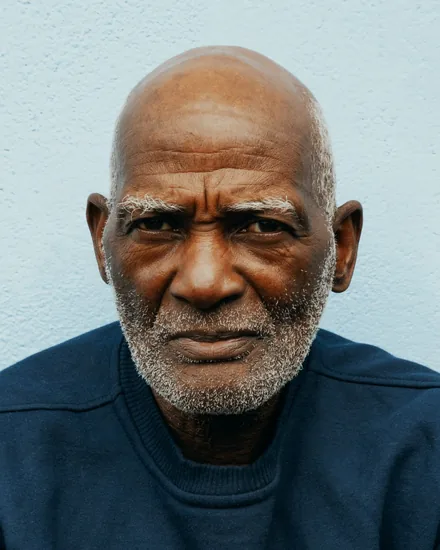
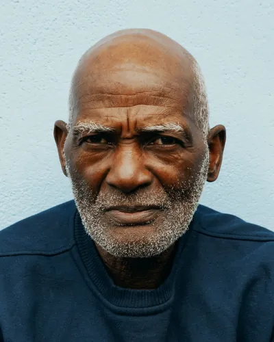

À propos d'APRODEC
Comment tout a commencé
APRODEC est née à Gbékong, dans l'arrondissement de Bertoua 2e, le 8 novembre 2024. Elle est partie d'une envie partagée, celle de ne pas rester chacun de son côté. [À compléter : les circonstances de la naissance de l'association.]
Au fil du temps, des rencontres, des retrouvailles et des petits projets ont donné corps à cette envie. [À compléter : deux ou trois moments marquants, avec les dates.]
Aujourd'hui, l'association rassemble des membres installés à Bertoua et ailleurs, qui gardent le même fil conducteur : se soutenir et avancer ensemble. [À compléter : nombre de membres, villes ou pays de résidence.]
À l'origine d'APRODEC

Fondateur de l'association
Njebayi Jean Severin
Missionnaire, il a fondé APRODEC à Gbékong avec l'envie de créer une association qui vienne en aide aux personnes les plus démunies.
Seul, on va vite. Ensemble, on va plus loin.
Ce qui nous réunit
Faire grandir la solidarité et l'équité au sein de la communauté, rapprocher ses membres et leur donner les moyens de s'épanouir sur le plan socio-économique grâce aux micro-projets.
Nos valeurs
-
La solidarité
Personne n'est laissé seul.
On ne laisse personne seul face à une difficulté. L'entraide est notre première habitude.
-
L'équité
La même considération pour tous.
Chaque membre est écouté et traité avec la même considération, quel que soit son parcours.
-
La convivialité
Le lien se construit ensemble.
Se retrouver, partager un repas ou prendre des nouvelles, c'est aussi ainsi que le lien se construit.
-
L'initiative
De l'idée à l'action.
Nous encourageons ceux qui veulent démarrer quelque chose et nous les aidons à passer de l'idée à l'action.
Ce que disent nos statuts
Association apolitique et à but non lucratif
L'association a pour objet l'encadrement des jeunes et l'amélioration des conditions de vie des personnes, par l'assistance et la promotion d'activités de développement social et économique. Elle est née de l'idée que le développement et le bien-être passent aussi par la solidarité entre les habitants du village de Gbékong (Bertoua 2e).
Nos cinq objectifs
- 01
Promouvoir la solidarité et l'équité au sein de la communauté.
- 02
Promouvoir le bien-être et la justice sociale par des actions de solidarité envers les personnes les plus démunies.
- 03
Lutter contre le chômage et la pauvreté chez les jeunes.
- 04
Promouvoir de nouvelles initiatives de développement et le vivre ensemble.
- 05
Promouvoir la culture de la paix et de l'amour fraternel par de bonnes œuvres.
L'association en bref
Les informations officielles, à retrouver aussi dans les mentions légales.
- Nom complet
- Association pour la Promotion du Développement Communautaire
- Sigle
- APRODEC
- Nature
- Association apolitique à but non lucratif
- Date de création
- 8 novembre 2024
- Siège social
- Gbékong (Bertoua 2e), Cameroun
- Durée
- 99 ans renouvelables
- Déclaration officielle
- N° 000013/RDA/B15/SP
- Zone d'intervention
- Gbékong, Bertoua, autres localités
Le bureau
Les personnes qui animent l'association et en répondent.
-

Njebayi Jean Severin
Président
-
Beyeme, épouse Njebayi Jean Severin
Secrétaire générale
-
Ngo Nack Fride
Trésorière
-
Njock Tanguy Francis
Commissaire aux comptes
Envie de nous rejoindre ?
Que vous soyez de Gbékong ou d'ailleurs, il y a une place pour vous dans l'association.